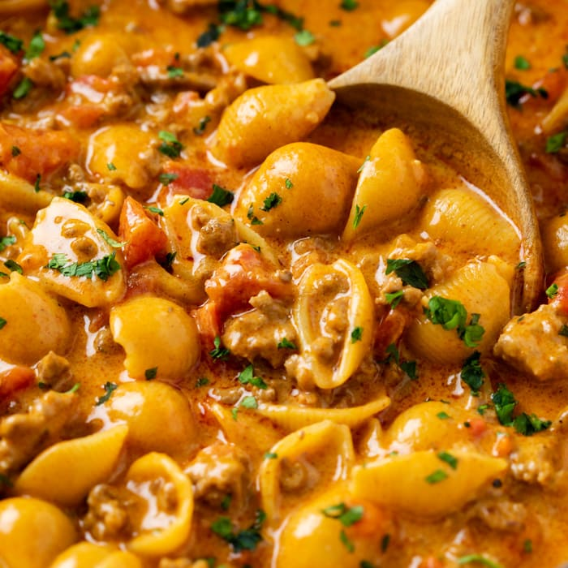

Treat yourself with this amazing mexican inspired pasta dish.
Ingredients
- Ground Beef
- Onion
- Fire roasted tomatoes
- Garlic
- Beef Broth
- Cream Cheese
- Pasta of your choice
- Corn
- Cilantro
- Salt
- Pepper
Directions
- Bring a pot of water to a boil. (Once boiling, add your pasta and cook to al dente.
- While the water boils, brown your ground beef, onion and garlic in a large saucepan.
- Once brown, add the can of fire roasted tomatoes with your can of beef broth.
- Bring to a simmer and add a half stick of cream cheese.
- Season with salt and pepper to taste.
- Drain your can of corn and add into the saucepan
- Drain the pasta and add in the mixture in the saucepan.
- Servce and top with cilantro!